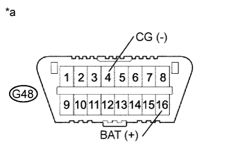
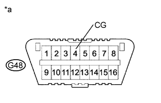

СИСТЕМА ECD > TC and CG Terminal Circuit |
| 1.CHECK DLC3 (CHECK VOLTAGE) |
|  |
Measure the voltage according to the value(s) in the table below.
| Tester Connection | Condition | Specified Condition |
| G48-16 (BAT) - G48-4 (CG) | Always | 11 to 14 V |
| *a | Front view of wire harness connector (to DLC3) |
|
| ||||
| OK | |
| 2.CHECK HARNESS AND CONNECTOR (ECM - DLC3) |
Disconnect the ECM connector.
Measure the resistance according to the value(s) in the table below.
| Tester Connection | Condition | Specified Condition |
| G61-15 (SIL) - G48-7 (SIL) | Always | Below 1 Ω |
| G61-4 (TC) - G48-13 (TC) | Always | Below 1 Ω |
| Tester Connection | Condition | Specified Condition |
| G61-15 (SIL) or G48-7 (SIL) - Body ground | Always | 10 kΩ or higher |
| G61-4 (TC) or G48-13 (TC) - Body ground | Always | 10 kΩ or higher |
Reconnect the ECM connector.
|
| ||||
| OK | ||
| ||
| 3.CHECK DLC3 |
|  |
Measure the resistance according to the value(s) in the table below.
| Tester Connection | Condition | Specified Condition |
| G48-4 (CG) - Body ground | Always | Below 1 Ω |
| *a | Front view of wire harness connector (to DLC3) |
|
| ||||
| OK | ||
| ||